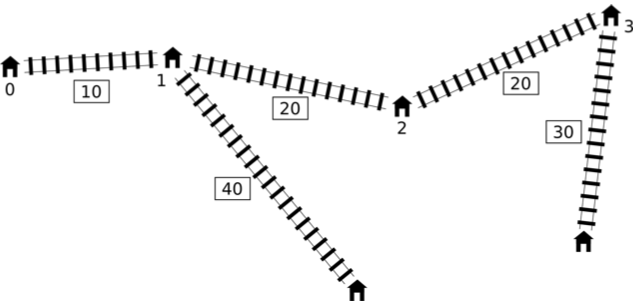

Pavel 有一个非常简单的铁路玩具。它有一条含有 $n$ 个车站的主干线并且连续编号为 $0$ 到 $n - 1$。车站 $0$ 和车站 $n - 1$ 就在这条主干线的两端。其中车站 $i$ 和车站 $i + 1$ 之间的距离为 $l_i$ 厘米 ($0 \leq i < n - 1$)。
除了这条主干线之外，这个铁路也许会有些支线。每条支线都是由主干线中的一个车站和主干线 外的一个新车站之间的一条新铁路构成 (这些新的车站不会被编号)。在主干线中的一个车站最多只能有一条支线。以主干线中的车站 $i$ 为起点的支线的长度为 $d_i$ 厘米。我们用 $d_i = 0$ 来表示车站 $i$ 没有支线。
Pavel 现正规划一条快捷方式：一条在主干线中两个不相同的车站之间（它们可能相邻）的快速干线。这条快速干线无论是连接哪两个车站，它的长度都将会恰好是 $c$ 厘米。
铁路中的每一段，包括那条新的快速干线，都能够双向行驶。任意两个车站的距离就是它们之间沿着铁路由一个车站到另一个车站之间最短路径的长度。所有车站组合中最大的距离就叫做整个铁路网络的直径。换句话说，存在一个最小值 $t$ 使任意两个车站之间的距离都不会超过 $t$。
Pavel 就是想建造一条快速干线，使得有了这条快速干线后新的铁路网络的直径能达到最小值。
你应该实现以下函数（方法）：
long long find_shortcut(int n, std::vector <int> l, std::vector <int> d, int c)
n：主干线中的车站数目，l：主干线中车站之间的距离（数组的长度为 $n - 1$），d：支线的长度（数组的长度为 $n$），c：新快速干线的长度。请使用提供的模板文件，参考关于你所使用的编程语言的实现细节。
"直径" 的最小值，就是距离最大值的最小值。因此考虑使用二分维护。
我们二分最后的直径 $D$，于是转化为判断是否存在一种连接方式使得任意两点间的距离 $\leq D$。
设连接的两个点为 $a, b$ ($a < b$)，那么对于两点 $i, j$，如果它们原来的距离和 $> D$，则它们通过 $a, b$ 的路径长一定 $\leq D$ (否则 $\mathrm{dist}(i, j)$ 就大于 $D$ 了)。
设点的编号为 $0, 1, 2, \cdots, n - 1$，$i$ 所在的支线的另一端为 $i'$。再记 $L_i = \mathrm{dist}(0, i) = l_0 + l_1 + \cdots + l_{i-1}$。
则 $i'$ 到 $j'$ ($i < j$) 原来的距离就是 $\left| L_i - L_j \right| + d_i + d_j = \left( L_j + d_j \right) + \left( -L_i + d_i \right) $，通过 $a, b$ 的路径长为 $\left| L_i - L_a \right| + \left| L_j - L_b \right| + d_i + d_j + c$ (容易证明 $i - a, j - b$ 比 $i - b, j - a$ 优秀)。
因此，如果 $\left( L_j + d_j \right) + \left( -L_i + d_i \right) > D$，则必有不等式 $\left| L_i - L_a \right| + \left| L_j - L_b \right| + d_i + d_j + c \leq D$ 成立。
注意到有绝对值的情况会比较麻烦，因此我们使用绝对值的性质 ($|x| \leq a \Leftrightarrow -a \leq x \leq a$) 将其拆成四个与之等价的不等式：
\begin{align*} L_i + L_j + d_i + d_j + (c - D) & \leq L_a + L_b \\ L_i - L_j + d_i + d_j + (c - D) & \leq L_a - L_b \\ - L_i + L_j + d_i + d_j + (c - D) & \leq - L_a + L_b \\ - L_i - L_j + d_i + d_j + (c - D) & \leq - L_a - L_b \end{align*}
首先，就是关于如何得到满足蓝色条件 $\left( L_j + d_j \right) + \left( -L_i + d_i \right) > D$ 的 $(i, j)$。
以下为了方便，记 $y_i = d_i - L_i; z_i = d_i + L_i$。考虑 $i_1 \leq i_2$，如果有 $y_{i_1} < y_{i_2}$，那么由 $i_1 < i_2 \Rightarrow L_{i_1} < L_{i_2}$。从而 $y_{i_1} + 2 L_{i_1} < y_{i_2} + 2 L_{i_2} \Rightarrow z_{i_1} < z_{i_2}$。
考虑到上面四个式子，都是 $y_i + y_j; y_i + z_j; z_i + y_j; z_i + z_j$ 这种形式。因此如果 $i_1, i_2$ 都满足蓝色条件，那么 $i_1$ 对最终答案的贡献是没有价值的。(因为这个式子的形式就是尽可能让左边最大化，定出右边的一个下界)
于是，对于 $i_1 < i_2$，有用的状态必满足 $y_{i_1} > y_{i_2}$。因此我们可以枚举右端点 $j$，然后用单调队列维护满足条件的 $i$，从而维护出 $y_i, z_i$ 的最小值，与 $y_j$ 或 $z_j$ 相加后就可以得到上面四个式子左端的最大值。分别记为 $PP, PN, NP, NN$。
后一部分的主要任务是，判断是否存在 $a, b$ 满足：
\begin{align*} L_a + L_b & \geq PP \\ L_a - L_b & \geq PN \\ - L_a + L_b & \geq NP \\ - L_a - L_b & \geq NN \end{align*}
这部分其实也不怎么难，我们只需枚举 $b$，用双指针处理出满足 $L_a + L_b \geq PP$ 的最小 $a$ (记为 $a_1$)、以及满足 $L_a - L_b \geq PN$ 的最小 $a$ (记为 $a_2$)。
由一次函数的单调性可知，对于枚举的 $b$，存在满足条件的 $a < b$ 使得上述四个不等式成立当且仅当 $a_1$ 或 $a_2$ 满足上述四个不等式。
因此使用单调性和双指针，我们只需检验 $O(n)$ 个 $(a, b)$ 对即可完成判定。
于是单次判定时间复杂度为 $O(n)$，加上最外面的二分，总时间复杂度 $O \left( n \log \sum d_i \right)$。
#include "shortcut.h"
#include <bits/stdc++.h>
#define N 1000005
#define y(_) (d[_] - L[_])
#define z(_) (d[_] + L[_])
typedef long long ll;
typedef std::vector <int> vec;
const ll INF = 2000000000000000; // 2e15
int l, n;
int que[N];
ll L[N], d[N];
inline void up(ll &x, const ll y) {x < y ? x = y : 0;}
bool check(ll diam) {
int i, h = 0, t = 0;
ll PP, PN, PX, NP, NN, NX, cur;
PP = PN = PX = NP = NN = NX = -1ll << 61;
for (i = 0; i < n; ++i) {
for (; h < t && L[i] + d[i] + y(que[h]) > diam; ++h) up(PX, z(que[h])), up(NX, y(que[h]));
cur = d[i] + l - diam;
up(PP, PX + L[i] + cur);
up(PN, PX - L[i] + cur);
up(NP, NX + L[i] + cur);
up(NN, NX - L[i] + cur);
for (; h < t && y(que[t - 1]) < y(i); --t);
que[t++] = i;
}
h = 0; t = n;
for (i = 0; i < n; ++i) {
for (; h < n - 1 && L[h] - L[i] < PN; ++h);
for (; t && L[t - 1] + L[i] >= PP; --t);
if (L[h] + L[i] >= PP && L[h] - L[i] >= PN && L[i] - L[h] >= NP && -L[h] - L[i] >= NN) return true;
if (t < n && L[t] + L[i] >= PP && L[t] - L[i] >= PN && L[i] - L[t] >= NP && -L[t] - L[i] >= NN) return true;
}
return false;
}
ll find_shortcut(int n, vec l, vec d, int c) {
int i; ll L, R, M; ::n = n; ::l = c;
for (i = 0; i < n - 1; ++i) ::L[i + 1] = ::L[i] + l[i];
for (i = 0; i < n; ++i) ::d[i] = d[i];
for (L = 0, R = INF; L < R; )
check(M = (L + R) / 2) ? R = M : (L = M + 1);
return L;
}
坑1：注意枚举 $a_1, a_2$ 时，由于 $L_b$ 的单调性不同，因此枚举 $a_1, a_2$ 的方向也是不同的 ($a_1$ 降序枚举，$a_2$ 升序枚举)。
坑2：注意一开始要将 $PP, PN, NP, NN$ 置为 $- \infty$。